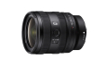

2024年02月21日，索尼（中国）有限公司正式发布全画幅F2.8大光圈标准变焦G镜头FE 24-50mm F2.8 G（型号名：SEL2450G）。这款镜头重量仅约440g，以轻巧便携的设计理念，打破了传统F2.8大光圈镜头的重量限制，以紧凑小巧的体积和出色性能，为用户带来崭新的创作体验。
可以说在七千元以内恒定F2.8变焦镜头的首选，体积小巧轻便，不管是搭配索尼A7C系列还是A7R系列的机器使用，都很顺手，而且画质表现相当不错，不管是视频拍摄还是照片，对焦跟焦也嘎嘎快。
最轻便的F2.8的恒定最大光圈变焦镜头，精准的自动对焦，高画质影像输出，分辨率和整体光学性能都相当出色。
GM的素质和做工，却给了黑G。这算一个缺点吗。